kernel
things programs on portal shouldn’t do
- read other user’s files
- modify OS’s memory
- read other user’s data in memory
- hang the entire system
things programs on portal shouldn’t do
- read other user’s files
- modify OS’s memory
- read other user’s data in memory
- hang the entire system
privileged operation: problem
- how can hardware (HW) plus operating system (OS) allow:
- read your own files from hard drive
- but disallow:
- read others files from hard drive
some ideas
- OS tells HW ‘okay’ parts of hard drive before running program code
- complex for hardware and for OS
- OS verifies your program’s code can’t do bad hard drive access
- no work for HW, but complex for OS
- may require compiling differently to allow analysis
- OS tells HW to only allow OS-written code to access hard drive
- that code can enforce only ‘good’ accesses
- requires program code to call OS routines to access hard drive
- relatively simple for hardware
kernel mode
extra one-bit register: ‘‘are we in kernel mode’’
- other names: privileged mode, supervisor mode, …
not in kernel mode = user mode
certain operations only allowed in kernel mode
- privileged instructions
example: talking to any I/O device
what runs in kernel mode?
system boots in kernel mode
OS switches to user mode to run program code
next topic: when does system switch back to kernel mode?
- how does OS tell HW where the (trusted) OS code is?
hardware + system call interface
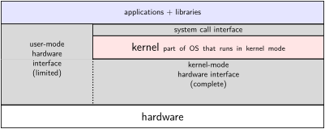
calling the OS?
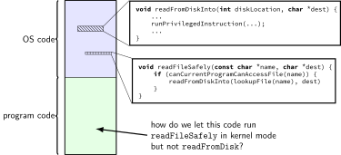
controlled entry to kernel mode (1)
- special instruction: ‘‘make system call’’
- similar idea as
callinstruction — jump to function elsewhere - (and allow that function to return later)
- similar idea as
- runs OS code in kernel mode at location specified earlier
- OS sets up at boot
- location can’t be changed without privilieged instrution
controlled entry to kernel mode (2)
- OS needs to make specified location:
- figure out what operation the program wants
- calling convention, similar to function arguments + return value
- be “safe” — not allow the program to do ‘bad’ things
- example: checks whether current program is allowed to read file before reading it
- requires exceptional care — program can try weird things
system call process
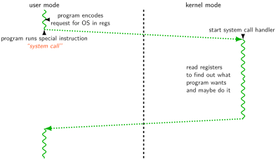
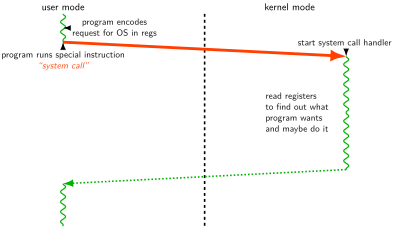
system call terminology
some inconsistency:
system call = event of entering kernel mode on request?
system call = whole process from beginning to end?
same issue as with ‘function call’
- is it just starting the function, or the whole time the function runs?
Linux x86-64 system calls
- special instruction:
syscall - runs OS specified code in kernel mode
Linux syscall calling convention
- before
syscall: %rax— system call number%rdi,%rsi,%rdx,%r10,%r8,%r9— args- after
syscall: %rax— return value- on error:
%raxcontains -1 times ‘‘error number’’ - almost the same as normal function calls
Linux x86-64 hello world
approx. system call handler
Linux system call examples
mmap,brk— allocate memoryfork— create new processexecve— run a program in the current processopen,read,write— access files_exit— terminate a processsocket,accept,getpeername— socket-related
system call handled slowly?

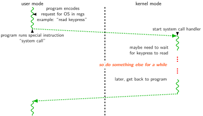


system call wrappers
- library functions to not write assembly:
system call wrapper: usage
/* unistd.h contains definitions of:
O_RDONLY (integer constant), open() */
#include <unistd.h>
int main(void) {
int file_descriptor;
file_descriptor = open("input.txt", O_RDONLY);
if (file_descriptor < 0) {
printf("error: %s\n", strerror(errno));
exit(1);
}
...
result = read(file_descriptor, ...);
...
}strace hello_world (1)
strace— Linux tool to trace system calls- run on assembly program we saw earlier:
$ strace -o trace.txt ./hello_world
$ cat trace.txt
execve("./hello_world", ["./hello_world"],
0x7ffeedafd0a0 /* 28 vars */) = 0
write(1, "Hello, World!\n\0", 14) = 14
exit(0) = ?
+++ exited with 0 +++
strace hello_world (2)
when statically linked:
execve("./hello_world", ["./hello_world"], 0x7ffeb4127f70 /* 28 vars */)
= 0
brk(NULL) = 0x22f8000
brk(0x22f91c0) = 0x22f91c0
arch_prctl(ARCH_SET_FS, 0x22f8880) = 0
uname({sysname="Linux", nodename="reiss-t3620", ...}) = 0
readlink("/proc/self/exe", "/u/cr4bd/spring2023/cs3130/slide"..., 4096)
= 57
brk(0x231a1c0) = 0x231a1c0
brk(0x231b000) = 0x231b000
access("/etc/ld.so.nohwcap", F_OK) = -1 ENOENT (No such file or
directory)
fstat(1, {st_mode=S_IFCHR|0620, st_rdev=makedev(136, 4), ...}) = 0
write(1, "Hello, World!\n", 14) = 14
exit_group(0) = ?
+++ exited with 0 +++
aside: what are those syscalls?
execve: run program
brk: allocate heap space
arch_prctl(ARCH_SET_FS, …): thread local storage pointer
- may make more sense when we cover concurrency/parallelism later
uname: get system information
readlink of /proc/self/exe: get name of this program
access: can we access this file [in this case, a config file]?
fstat: get information about open file
exit_group: variant of exit
strace hello_world (2)
when dynamically linked:
execve("./hello_world", ["./hello_world"], 0x7ffcfe91d540 /* 28 vars */)
= 0
brk(NULL) = 0x55d6c351b000
...
openat(AT_FDCWD, "/etc/ld.so.cache", O_RDONLY|O_CLOEXEC) = 3
fstat(3, {st_mode=S_IFREG|0644, st_size=196684, ...}) = 0
mmap(NULL, 196684, PROT_READ, MAP_PRIVATE, 3, 0) = 0x7f7a62dd3000
close(3) = 0
access("/etc/ld.so.nohwcap", F_OK) = -1 ENOENT (No such file or directory)
openat(AT_FDCWD, "/lib/x86_64-linux-gnu/libc.so.6", O_RDONLY|O_CLOEXEC) = 3
read(3, "\177ELF\2\1\1\3\0\0\0\0\0\0\0\0\3\0>\0\1\0\0\0"..., 832) = 832
...
close(3) = 0
write(1, "Hello, World!\n", 14) = 14
exit_group(0) = ?
+++ exited with 0 +++hardware + system call + library interface
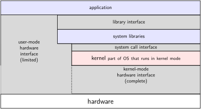
things programs on portal shouldn’t do
- read other user’s files
- modify OS’s memory
- read other user’s data in memory
- hang the entire system
memory protection
program 1
- What happens?
A. 42 is printed B. 100 is printed C. program 1 crashes D. program 2 crashes E. something else
program memory (two programs)
![memory layout of two programs, shown side-by-side. Each has (in order from top to bottom) an upper region used by the OS, a stack, a heap/other dynamic region, a writeable data region, and a code + constants region. The locations of the stack, heap, data, and code+constants are slightly different for the two programs. Between the used by OS and stack and between the stack and heap, and below the code+constants region are hunavailable space marked with a hashing pattern. The 'used by OS' region is also marked with faded hashing pattern, indicating that it is unavailable for program use.](../kernel/texfig/progMem.figure-1.svg)
address space
- programs have illusion of own memory
- called a program’s address space
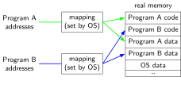
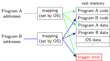
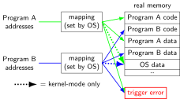
address space mechanisms
- topic after exceptions
- called virtual memory
- mapping called page tables
- mapping part of what is changed in context switch
program crashing?
- what happens on processor when program crashes?
- other program informed of crash to display message
- use processor to run some other program
- how does hardware do this?
- would be complicated to tell about other programs, etc.
- instead: hardware runs designated OS routine
exceptions
- recall: system calls — software asks OS for help
- also cases where hardware asks OS for help
- different triggers than system calls
- but same mechanism as system calls:
- switch to kernel mode (if not already)
- call OS-designated function (configured at boot)
types of exceptions
- system calls
- intentional — ask OS to do something
- errors/events in programs
- memory not in address space (“Segmentation fault”)
- privileged instruction
- divide by zero, invalid instruction
- …
- external — I/O, etc.
- timer
- I/O devices
- hardware is broken (e.g. memory parity error)
types of exceptions
- system calls
- intentional — ask OS to do something
- errors/events in programs
- memory not in address space (“Segmentation fault”)
- privileged instruction
- divide by zero, invalid instruction
- …
- external — I/O, etc.
- timer
- I/O devices
- hardware is broken (e.g. memory parity error)
things programs on portal shouldn’t do
- read other user’s files
- modify OS’s memory
- read other user’s data in memory
- hang the entire system
exceptions [Venn diagram]

general exception process
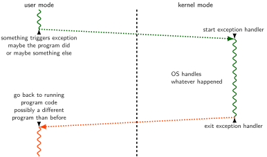
time multiplexing

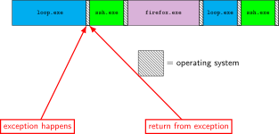
switching programs
- OS starts running somehow
- some sort of exception
- saves old registers + program counter + address mapping
- (optimization: could omit when program crashing/exiting)
- sets new registers + address mapping, jumps to new program counter
- called context switch
- saved information called context
contexts (A running)
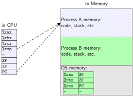
contexts (B running)
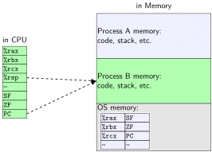
threads
thread = illusion of own processor
own register values
own program counter value
actual implementation:
many threads sharing one processor- problem: where are register/program counter values
when thread not active on processor?
- problem: where are register/program counter values
exception patterns with I/O (1)
input — available now:
- exception: device says ‘‘I have input now’’
- handler: OS stores input for later
- exception (syscall): program says ‘‘I want to read input’’
- handler: OS returns that input
input — not available now:
- exception (syscall): program says ‘‘I want to read input’’
- handler: OS runs other things (context switch)
- exception: device says ‘‘I have input now’’
- handler: OS retrieves input
- handler: (possibly) OS switches back to program that wanted it
exception patterns with I/O (2)
output — ready now:
- exception (syscall): program says ‘`I want to output this’
- handler: OS sends output to device
output — not ready now
- exception (syscall): program says ‘‘I want to output’’
- handler: OS realizes device can’t accept output yet
- (other things happen)
- exception: device says ‘‘I’m ready for output now’’
- handler: OS sends output requested earlier
keyboard input timeline

context switches and exceptions

- program execution interleaves with OS
- OS might context switch when it is run, might not
emptyloop lab (1)
- naive computer model:
RecordDelta called with roughly same number each time
emptyloop lab (2)
- will see spikes in recorded times from exceptions
- can infer what system is doing
emptyloop lab (3)
- upcoming lab: we’ll supply program that times in loop
- also will look at Linux counters for asynchronous exceptions
- should be able to observe when OS/other programs run
- (and about how long)
review: definitions
exception: hardware calls OS specified routine
- many possible reasons
- system calls: type of exception
context switch: OS switches to another thread
- by saving old register values + loading new ones
- part of OS routine run by exception
- OS won’t know it wants to do this when exception happens
which of these require exceptions? context switches?
- A. program calls a function in the standard library
- B. program writes a file to disk
- C. program A goes to sleep, letting program B run
- D. program exits
- E. program returns from one function to another function
- F. program pops a value from the stack
which require exceptions [answers] (1)
A. program calls a function in the standard library
- no (same as other functions in program); many standard library functions make no system calls (and do not otherwise trigger exceptions — for example
strlen,pow; also if we consider the calling of a function just thecallinstruction, then the library functions that do make system calls won’t do so until later)
- no (same as other functions in program); many standard library functions make no system calls (and do not otherwise trigger exceptions — for example
B. program writes a file to disk
- yes (requires kernel mode only operations)
C. program A goes to sleep, letting program B run
- yes (kernel mode usually required to change the address space to acess program B’s memory)
which require exceptions [answer] (2)
D. program exits
- yes (requires switching to another program, which requires accessing OS data + other program’s memory)
E. program returns from one function to another function
- no
F. program pops a value from the stack
- no
which require context switches [answer]
no: A. program calls a function in the standard library
no: B. program writes a file to disk
- (but might be done if program needs to wait for disk and other things could be run while it does)
yes: C. program A goes to sleep, letting program B run
yes: D. program exits
no: E. program returns from one function to another function
no: F. program pops a value from the stack
terms for exceptions
terms for exceptions aren’t standardized
our readings use one set of terms
- interrupts = externally-triggered
- faults = error/event in program
- trap = intentionally triggered
all these terms appear differently elsewhere
The Process
process = thread(s) + address space
illusion of dedicated machine:
- thread = illusion of own CPU
- (process could have multiple threads — with independent registers)
- address space = illusion of own memory